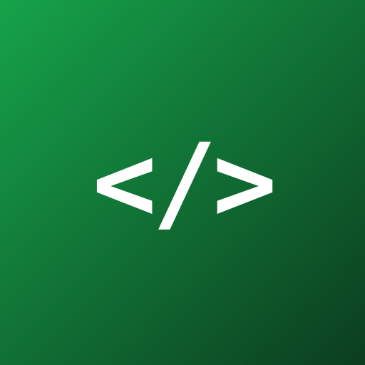

open-code
手机 · Codespaces · OpenCode · Kaggle GPU
1
2
让 OpenCode 全屏（只做一次）
从这里点开的 OpenCode 会套一层上下都有按钮的小浏览器，因为它和这个入口不是同一个网站。把 OpenCode 自己放到主屏幕，打开就是全屏的：
- 点上面的「打开 OpenCode」，再点右下角的指南针图标，换到 Safari 里打开。
- 在 Safari 里点「…」→「共享」→「添加到主屏幕」，开关保持打开，点「添加」。
- 以后点主屏幕上的 OpenCode 图标。第一次进去要再添加一次项目（文件夹在下面），原来的对话都还在。
OpenCode 页面空白？
在 Codespace 的终端里输入下面这个命令，回车，然后刷新 OpenCode 页面。全屏的 OpenCode 没有刷新按钮：从后台划掉它，再点图标打开。
web新建会话时，项目选这个文件夹：
/workspaces/open-code设置：换了新的 Codespace？
这个入口页也可以添加到主屏幕，用来唤醒 Codespace。